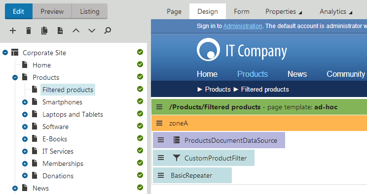
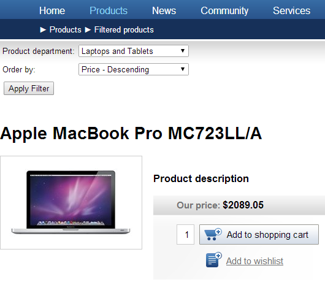

Developing custom filters
Filters are components that allow users to modify the data loaded and displayed by other website components. Filters provide two types of functionality:
Limiting the range of items displayed in a list
Changing the order of items in a list
Kentico comes with a built-in set of filters for various types of data, but you can also create custom filters to fulfill specific requirements.
Implement filters as user controls that inherit from one of the following base classes:
CMSAbstractDataFilterControl - works with page data sources
CMSAbstractControlFilterControl - works with navigation web parts
CMSAbstractQueryFilterControl - works with custom table and query data sources
Select the appropriate base class according to the type of data that you need to filter. You can find these base classes in the CMS.DocumentEngine.Web.UI namespace.
Note: If you are connecting a CMSAbstractQueryFilterControl filter to a data source with a custom query, the code of the query must contain the ##WHERE## and ##ORDERBY## expressions. When applied, the filter replaces the expressions with dynamically generated SQL code. See: Using properties to modify queries
Add the filter control onto your website through the Filter web part.
You need to specify the path to the .ascx file in the Filter control path property.
Attach the filter web part to the data source web part of the matching type.
You can also use custom filters anywhere in your code as standard user controls, for example on ASPX templates or in other web parts. All necessary properties, such as the FilterName used to connect with the data source, are inherited from the base class.
Example - Creating a custom product filter
The following example demonstrates how to develop a custom filter for product pages. The filter allows users to view products from specific departments and determine the order in which products are displayed. The filter applies when a postback occurs on the page. You can create filters for all types of pages or other objects using the same approach.
Creating the filter control
Open your web project in Visual Studio.
Create a New folder under the root called CMSGlobalFiles (if it doesn't already exist).
The system can export the content of this folder along with your site when you deploy it to another instance of Kentico.
Add a Web User Control named CustomProductFilter.ascx into the CMSGlobalFiles folder.
Add the following markup to the control:
<%@ Control Language="C#"AutoEventWireup="true"CodeFile="CustomProductFilter.ascx.cs"Inherits="CMSGlobalFiles_CustomProductFilter"%><table><tr><td style="padding:2px"><cms:LocalizedLabel ID="lblDepartment"runat="server"Text="Product department"DisplayColon="true"></cms:LocalizedLabel></td><td style="padding:2px"><cms:LocalizedDropDownList ID="drpDepartment"runat="server"Width="180"></cms:LocalizedDropDownList></td></tr><tr><td style="padding:2px"><cms:LocalizedLabel ID="lblOrder"runat="server"Text="Order by"DisplayColon="true"></cms:LocalizedLabel></td><td style="padding:2px"><cms:LocalizedDropDownList ID="drpOrder"runat="server"Width="180"></cms:LocalizedDropDownList></td></tr><tr><td colspan="2"style="padding:2px"><cms:LocalizedButton ID="btnFilter"runat="server"Text="Apply Filter"/></td></tr></table>This creates the design of the filter's user interface. The filter is composed of localized labels, drop-down lists and a button, arranged in a simple table layout. Alternatively, you can use a CSS‑based layout applied through HTML elements (e.g. <div>, <span>, etc.).
You can enter the captions of the filter's child controls using localization strings through the ResourceString property, rather than directly as Text.
Implementing the filtering logic
Switch to the user control's code behind file and add the following references:
usingSystem.Data;usingSystem.Web.UI.WebControls;usingCMS.DocumentEngine.Web.UI;usingCMS.Helpers;usingCMS.Ecommerce;Set the control to inherit from the appropriate base class.
This example uses the CMSAbstractDataFilterControl class, since the filter is intended for use with a page data source.
publicpartialclassCMSGlobalFiles_CustomProductFilter : CMSAbstractDataFilterControl{}Add the following methods into the user control class to load the filtering options into the child drop-down lists:
/// <summary>/// Sets up the inner child controls./// </summary>privatevoidSetupControl(){// Hides the filter if StopProcessing is enabledif(this.StopProcessing){this.Visible =false;}// Initializes only if the current request is NOT a postbackelseif(!RequestHelper.IsPostBack()){// Loads product departments as filtering optionsInitializeDepartments();// Initializes the Order by drop-down listIntializeOrder();}}/// <summary>/// Loads the ordering options into the Order by drop-down list./// </summary>privatevoidIntializeOrder(){// Initializes the ordering optionsthis.drpOrder.Items.Add(newListItem("Price - Ascending","priceAsc"));this.drpOrder.Items.Add(newListItem("Price - Descending","priceDesc"));this.drpOrder.Items.Add(newListItem("Product name","name"));}/// <summary>/// Loads all existing product departments as filtering options into the department drop-down list./// </summary>privatevoidInitializeDepartments(){// Gets all product departments from the system's databasevardepartments = DepartmentInfoProvider.GetDepartments();// Checks that at least one product department existsif(!DataHelper.DataSourceIsEmpty(departments)){// Binds the departments to the drop-down listthis.drpDepartment.DataSource = departments;this.drpDepartment.DataTextField ="DepartmentDisplayName";this.drpDepartment.DataValueField ="DepartmentID";this.drpDepartment.DataBind();// Adds the default '(all)' optionthis.drpDepartment.Items.Insert(0,newListItem("(all)","##ALL##"));}}Define the SetFilter() method:
/// <summary>/// Generates a WHERE condition and ORDER BY clause based on the current filtering selection./// </summary>privatevoidSetFilter(){stringwhere =null;stringorder =null;// Generates a WHERE condition based on the selected product departmentif(this.drpDepartment.SelectedValue !=null){// Gets the ID of the selected departmentintdepartmentId = ValidationHelper.GetInteger(this.drpDepartment.SelectedValue, 0);if(departmentId > 0){where ="SKUDepartmentID = "+ departmentId;}}// Applies the selected product orderif(this.drpOrder.SelectedValue !=""){switch(this.drpOrder.SelectedValue){case"priceAsc":order ="SKUPrice";break;case"priceDesc":order ="SKUPrice Desc";break;case"name":order ="SKUName";break;}}if(where !=null){// Sets the Where conditionthis.WhereCondition = where;}if(order !=null){// Sets the OrderBy clausethis.OrderBy = order;}// Raises the filter changed eventthis.RaiseOnFilterChanged();}The filter control dynamically generates a WHERE condition and ORDER BY statement based on the selected filtering options. The values are stored in the WhereCondition and OrderBy properties inherited from the base class. When you attach the filter to a data source, it reads the values of the properties and inserts them into the SQL query used to load the data.
Note:
The filter must inherit from the appropriate base class according to the type of the used data source.
If you are connecting a filter to a data source with a custom query, the code of the query must contain the ##WHERE## and ##ORDERBY## expressions. When applied, the filter replaces the expressions with the dynamically generated SQL code. See: Using properties to modify queries
Add two more methods that override the handlers of the control's Init and PreRender events:
/// <summary>/// Init event handler./// </summary>protectedoverridevoidOnInit(EventArgs e){// Creates the child controlsSetupControl();base.OnInit(e);}/// <summary>/// PreRender event handler/// </summary>protectedoverridevoidOnPreRender(EventArgs e){// Checks if the current request is a postbackif(RequestHelper.IsPostBack()){// Applies the filter to the displayed dataSetFilter();}base.OnPreRender(e);}The OnInit and OnPreRender handlers call the previously defined private methods during the correct stages of the page life cycle.
When a user clicks the Apply Filter button, a postback occurs, which triggers the SetFilter() method during the PreRender event and the filter applies the conditions to the displayed data. Notice the use of the CMS.Helpers.RequestHelper.IsPostBack() method in the conditions. The control only calls the SetFilter() method when the current page request is a postback, and initializes the child controls only on the first page load (i.e. when the request is not a postback).
Adding the filter to a portal engine page
The filter control is now ready and you can try out its functionality. It is recommended to test the filter on the Corporate or E-commerce sample sites, which already contain examples of product pages.
Log in to the administration interface.
Open the Pages application and create a new page.
Switch to the page's Design tab and add the following web parts:
Web part
Instructions
Pages data source
____________________Configure the web part to load product pages.
Fill in the Filter name property (e.g. CustomProductFilter).
Note: You can alternatively use the Products data source web part for this purpose.
Filter
Assign a Filter name that matches the data source (CustomProductFilter).
Enter the path of the .ascx file implementing your custom filter into the Filter control path property:
~/CMSGlobalFiles/CustomProductFilter.ascx
Basic repeater
Enter the ID of the Pages data source web part into the Data source name property.
Set an appropriate Transformation name, for example: CMS.Product.CorporateSite
For more information about setting up web parts that display data and allow filtering, see:

Creating a page that displays product pages and a custom filter
If you view the page on the live site, you can see a list of products with the custom filter above. Try filtering the products by their department and changing their order.

Filtering the products to display only Laptops and tables, in descending order according to their price